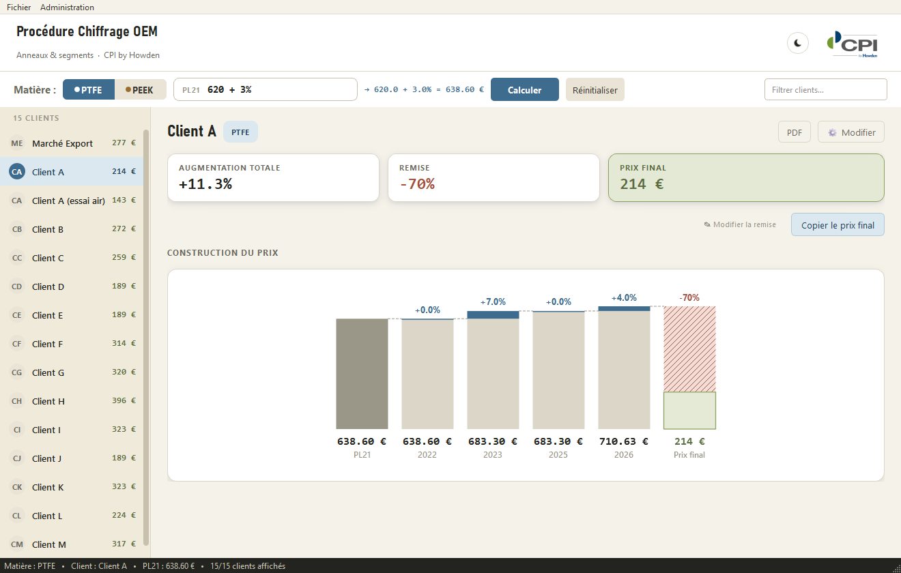
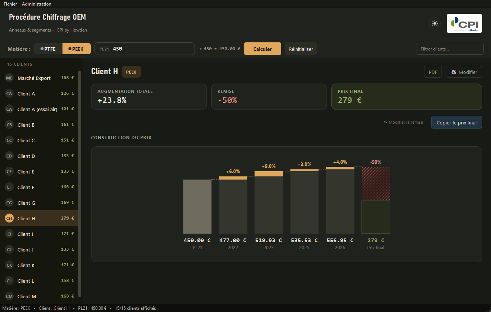
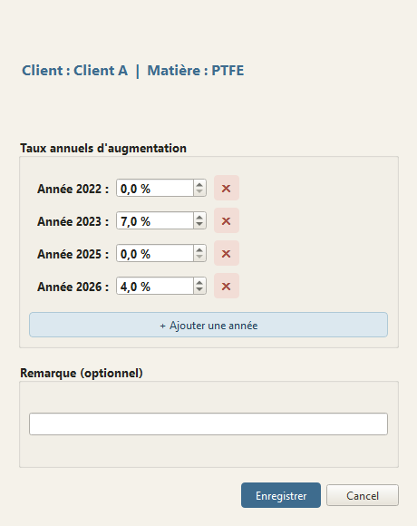
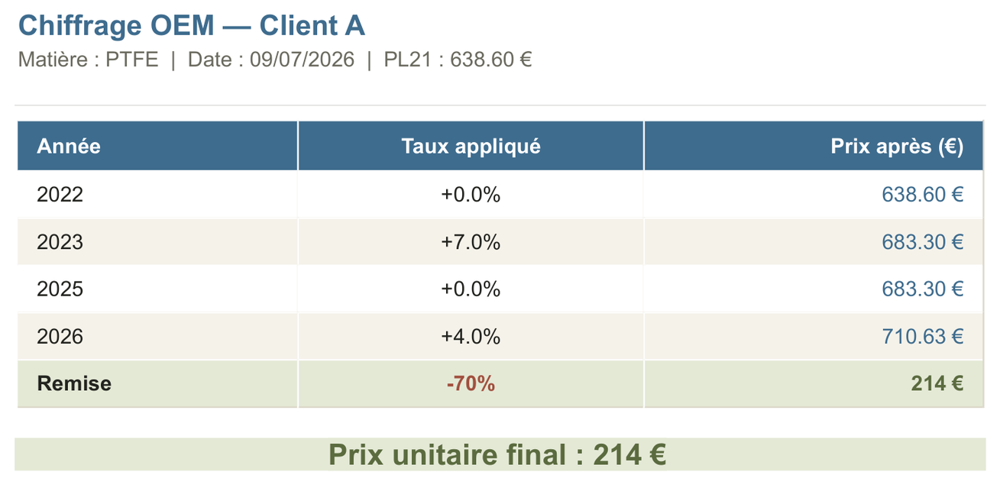

C P I B Y H O W D E N — U S A G E I N T E R N E
Chiffrage OEM — Anneaux & Segmentation
Ce que fait l'outil de calcul des prix OEM, comment il est construit, et ce qu'on vient d'y
changer — pour que toute l'équipe s'y retrouve, aujourd'hui comme dans six mois
(chiffrage_oem.py).
STATUT
En production — chiffrage_oem.py est le build officiel depuis le 8 juillet 2026
VERSION DOCUMENTÉE
chiffrage_oem.py — 3 258 lignes
AUTEURS
Dylan Carlier — conception initiale : N. Richet, R. Demeure
§1Objet du document
Chiffrage OEM calcule les prix des anneaux et segments d'étanchéité (PTFE, PEEK) vendus aux
constructeurs de compresseurs. Ce document explique comment il fonctionne, ce qu'il permet de
faire, et ce qu'on vient d'y changer : le principe de calcul, les données qu'il manipule,
l'interface qu'on a retravaillée, et les bugs qu'on a corrigés au passage.
L'idée : qu'un futur utilisateur, un futur administrateur, ou nous-mêmes dans six mois,
puisse s'y retrouver sans avoir à relire tout le code.
§2Présentation générale
Concrètement : on part d'un prix catalogue de 2021 — le PL21 — propre à une pièce
donnée (une référence, un diamètre, une géométrie), et on le fait remonter dans le temps. Il est
saisi à la main à chaque calcul : l'application ne stocke pas de catalogue de pièces, seulement
les règles tarifaires négociées par client.
Chaque client a sa propre trajectoire : une série de hausses annuelles cumulées (2022, 2023,
2025, 2026…) qui reflètent l'évolution des coûts, puis une remise négociée qui ramène le prix à
ce qu'on lui facture vraiment. Quinze clients tournent déjà dans l'outil par défaut —
Client A, Client B, Client D, Client G, Client H — répartis sur deux matières. On peut en
ajouter, en retirer, changer leurs taux, sans toucher une ligne de code.
§3Principe de calcul
Toute la logique tient dans une seule formule :
prix_final = ⌈ PL21 × ∏ (1 + tauxannée) × (1 + remise) ⌉
- PL21 — prix catalogue 2021, saisi comme un nombre simple
(620), une opération (600 + 50) ou une
variation en pourcentage (620 + 3%).
- tauxannée — hausse propre au couple (matière, client), appliquée
successivement dans l'ordre chronologique.
- remise — taux négocié avec le client, stocké en valeur négative
(-0.70 pour -70 %).
- ⌈⌉ — le résultat est arrondi à l'euro entier supérieur (les prix finaux
s'affichent toujours sans décimales, ex. 207 €) ; les prix
intermédiaires, eux, conservent deux décimales.
Un exemple parle mieux qu'une formule — Client A, PTFE, PL21 = 620 €
| Étape | Taux | Prix après |
|---|
| PL21 | — | 620,00 € |
| 2022 | +0,0 % | 620,00 € |
| 2023 | +7,0 % | 663,40 € |
| 2025 | +0,0 % | 663,40 € |
| 2026 | +4,0 % | 689,94 € |
| Remise | -70,0 % | 207 € |
§4Modèle de données
Rien de compliqué côté stockage : tout tient dans un seul fichier,
chiffrage_data.json — pas de base de données à installer ni à maintenir.
{
"augmentations": {
"PTFE": { "Client A": { "2022": 0.00, "2023": 0.07, … }, … },
"PEEK": { … }
},
"remises": {
"PTFE": { "Client A": -0.70, … }, "PEEK": { … }
},
"remarques": { "Client C": "Client B pour Client C : prix Client C - 20%", … },
"historique": [ { ts, pl21, matiere, client, prix_final }, … ], // 500 dernières entrées
"audit_log": [ { ts, action, matiere, client, details }, … ], // 1 000 dernières entrées
"admin_hash": "pbkdf2_sha256$…"
}
Emplacement du fichier
- Poste de développement — à côté du script source.
- Poste utilisateur (une fois l'appli installée) —
%APPDATA%\CPI Howden\Chiffrage OEM\. On a dû l'y déplacer : Program
Files refuse l'écriture aux comptes standards, et avant ce correctif l'appli plantait dès le
premier clic sur « Calculer ». Une migration automatique récupère les données si une ancienne
installation en avait laissé quelque part.
§5Architecture applicative
Rien d'exotique côté technique :
- Langage / framework — Python 3 + PyQt6, style Fusion (rendu cohérent
Windows/Mac/Linux).
- Export Excel — optionnel, via openpyxl ; se désactive
proprement si le module est absent.
- Export PDF — QTextDocument +
QPrinter, sans dépendance externe.
- Persistance — un unique fichier JSON, sans verrouillage : adapté à un usage
mono-poste, pas à un accès concurrent (voir §10).
Organisation du code
Tout vit dans un seul fichier, chiffrage_oem.py (3 258 lignes à ce jour), réparti
en 12 classes : MainWindow (fenêtre principale),
ClientDetailPanel (panneau de détail et cascade),
WaterfallChart (visualisation peinte à la main, sans librairie
graphique), ClientListItem, StatCard,
Toast, TitlebarThemer, et les cinq dialogues
administrateur (EditClientDialog, AddClientDialog,
ChangePasswordDialog, AuditLogDialog,
HistoriqueDialog).
§6Fonctionnalités
6.1 — Saisie & calcul
- Sélecteur de matière (PTFE / PEEK par
défaut, extensible sans coder).
- Champ PL21 acceptant trois formats, avec prévisualisation du résultat en temps réel :
nombre simple (620), opération (600 + 50),
variation en pourcentage (620 + 3%).
- « Calculer » (ou Entrée) chiffre tous les clients visibles — en respectant le filtre de
recherche actif — et journalise chaque calcul dans l'historique.
- Filtre de recherche clients (Ctrl+F), navigation clavier
↑ / ↓ dans la liste.
6.2 — Visualisation du calcul
Le panneau de détail raconte le calcul plutôt que de juste donner un chiffre : le PL21 en bas,
chaque hausse qui s'empile dessus, puis la remise qui grignote une part du total — visible d'un
coup d'œil grâce à un dégradé hachuré. Trois petites cartes résument l'essentiel (augmentation
totale, remise, prix final), et le prix final se copie en un clic quand il faut le transmettre
vite.
6.3 — Administration (protégé par mot de passe)
- Ajouter / supprimer un client — la suppression retire le client de toutes les matières
simultanément.
- Ajouter une matière — hérite de la liste de clients existante, taux initialisés à 0 %.
- Modifier les taux annuels et la remarque d'un client — années ajoutables et supprimables
dynamiquement.
- Modifier la remise d'un client — seule action accessible sans mot de passe depuis le
panneau de détail, geste fréquent au quotidien.
- Changer le mot de passe administrateur.
6.4 — Exports
- CSV — séparateur « ; », encodage UTF-8 avec BOM (compatibilité Excel).
- Excel (.xlsx) — mise en forme aux couleurs de la matière, prix finaux en vert.
- PDF — fiche détaillée par client, ou récapitulatif de toute une matière.
6.5 — Traçabilité
- Historique des calculs (date, matière, client, PL21, prix obtenu) — 500 dernières entrées,
consultable et vidable.
- Journal d'audit des actions administratives — 1 000 dernières entrées, lecture seule.
§7Captures d'écran
Plutôt que de décrire l'interface, autant la montrer : l'écran principal en clair et en
sombre, le dialogue d'administration, et un export PDF généré par l'appli elle-même — pas une
maquette.

Thème clair — matière PTFE. PL21 saisi en pourcentage (620 + 3 %) ;
cascade de calcul, cartes de synthèse et remise à -70 %.

Thème sombre — matière PEEK. Les 15 clients chiffrés d'un coup dans la
sidebar ; accent ambre propre au PEEK sur la remise et le prix final.

Administration — modifier un client. Taux annuels ajoutables/supprimables
dynamiquement, remarque libre ; accessible via « ⚙ Modifier », protégé par mot de passe.

Export PDF client. Fiche générée par « PDF » dans le panneau de détail
— tableau des étapes de calcul et prix final mis en évidence.
§8Journal des évolutions — comment on a peaufiné l'interface
Cette itération, on l'a passée à peaufiner l'interface : des animations et des transitions
pensées pour rester dans l'esprit « fiche technique » déjà en place (papier chaud, accents
PTFE/PEEK) — pas pour en rajouter juste pour la forme.
- Cascade animée — les colonnes « poussent » depuis la base l'une après l'autre, en
léger décalé, au lieu d'apparaître d'un bloc : la formule se construit sous les yeux de
l'utilisateur.
- Compteurs animés — le prix final et l'augmentation totale défilent vers leur
nouvelle valeur (effet odomètre, ~400 ms).
- Fondu de changement de client — apparition en fondu du panneau de détail (160 ms)
au lieu d'un remplacement brutal.
- Notification « toast » — confirmation glissante et auto-disparaissante pour la
copie du prix final.
- Fondu croisé de thème — bascule clair/sombre par capture d'écran + fondu (260 ms),
plus de clignotement.
- Transition de couleur matière — le bouton Calculer glisse du bleu acier PTFE à
l'ambre PEEK (240 ms) au changement de matière.
- Survol de la cascade — colonne surlignée et infobulle détaillant l'étape (prix
avant → taux → prix après).
- Barre de titre Windows thémée — sombre en mode sombre ; ascenseurs fins aux couleurs
du thème.
- Cascade agrandie — hauteur 210→270 px, colonnes 60→76 px, police des prix 8→12 pt,
pour une meilleure lisibilité du détail de calcul. Agrandie après relecture : elle paraissait
trop dense pour qu'on lise vite le détail.
- Halo de « flash » sur chaque ligne client au recalcul — implémenté, puis retiré.
Retirée après relecture : ça ressemblait plus à un bug d'affichage qu'à un vrai signal.
§9Fiabilité & sécurité — ce qu'on a trouvé en relisant le code
On a relu tout chiffrage_oem.py à la recherche de ce qui pouvait mal tourner :
erreurs non gérées, entrées non vérifiées. Huit points nous ont arrêtés — tous corrigés, et
vérifiés par 18 contrôles automatisés plus un rejeu complet du scénario d'interface, sans rien
casser au passage.
| # | CE QU'ON A TROUVÉ | CE QUI POUVAIT ARRIVER | CE QU'ON A FAIT |
|---|
| 01 | La formule « base − remise % » laissait passer un PL21 à zéro ou
négatif | Division par zéro au calcul, ou pire : un prix négatif affiché comme si de
rien n'était | Le signe du résultat est maintenant vérifié avant d'être accepté |
| 02 | L'écriture du fichier de données n'était pas atomique |
Un plantage ou une coupure de courant en plein milieu de l'écriture tronque le JSON — et
avec lui, toutes les remises et remarques négociées | On écrit dans un fichier
temporaire, puis on le substitue d'un coup (os.replace) |
| 03 | Un fichier corrompu était remplacé sans prévenir personne |
Perte de données invisible — aucune trace, aucun avertissement | Le fichier est
renommé en .corrompu.bak et conservé, avec un message clair au
démarrage |
| 04 | Les noms de client, de matière ou les remarques n'étaient pas échappés
dans les PDF exportés | Un simple « & » ou « < » dans un nom suffit à casser le
rendu du document | Tout texte libre passe maintenant par un échappement HTML
systématique |
| 05 | Les exports CSV / Excel étaient vulnérables à l'injection de formule |
Un nom de client commençant par =, +,
- ou @ s'exécute comme une formule à
l'ouverture dans Excel (CWE-1236) | Un préfixe neutralisant s'ajoute automatiquement sur
les champs concernés |
| 06 | Exporter vers un fichier déjà ouvert ailleurs (Excel, un lecteur PDF…) |
Faisait remonter une erreur générique illisible — « une erreur inattendue s'est
produite… » | Le message dit maintenant clairement ce qui s'est probablement
passé |
| 07 | Ajouter un client juste après avoir supprimé le dernier d'une matière |
Faisait planter l'appli (IndexError), rattrapé de justesse par
le filtre global | L'appli se rabat proprement sur une autre matière existante |
| 08 | Ajouter une matière sur un jeu de données vidé à la main |
Même souci potentiel (IndexError), si quelqu'un modifie le JSON
directement | Une garde défensive couvre maintenant ce cas |
§10Limites connues & recommandations
Mot de passe administrateur — au moment de la rédaction de ce document, le hash SHA-256
n'était pas salé et le mot de passe par défaut était écrit en clair dans le code. C'est
désormais corrigé : le hash est salé (PBKDF2-HMAC-SHA256) et un mot de passe est généré
aléatoirement au premier lancement, à la place d'une valeur par défaut fixe. Pour une appli
mono-poste, la vraie barrière de sécurité reste l'accès physique au poste plutôt que ce mot de
passe.
- Aucun accès concurrent géré — un seul fichier JSON, sans verrouillage. Deux
personnes qui modifieraient les données en même temps s'écraseraient l'une l'autre. Sans
conséquence tant que l'outil reste sur un seul poste, ce qui est le cas aujourd'hui.
- Pas de suite de tests versionnée — les vérifications de cette itération (scénario
d'interface, contrôles d'erreurs) ont été écrites pour l'occasion et exécutées à la main, sans
être conservées dans le dépôt.
§11Dépendances & distribution
- Requis — Python 3, PyQt6.
- Optionnel — openpyxl (désactive l'export Excel si absent, sans erreur).
- Empaquetage — PyInstaller (--onefile --windowed),
installeur Inno Setup, versionnage dynamique via release.ps1.
§12Glossaire
| Terme | Définition |
|---|
| PL21 | Prix catalogue de référence (liste 2021), saisi pièce par pièce à chaque
calcul. |
| Matière | Famille de matériau (PTFE, PEEK…) ; porte ses propres taux et remises
par client. |
| Taux d'augmentation | Hausse annuelle cumulée appliquée au PL21, propre à chaque
couple matière/client. |
| Remise | Taux négocié final, ramène le prix au niveau commercial convenu. |
| Cascade | Visualisation de la construction du prix, étape par étape (waterfall
chart). |